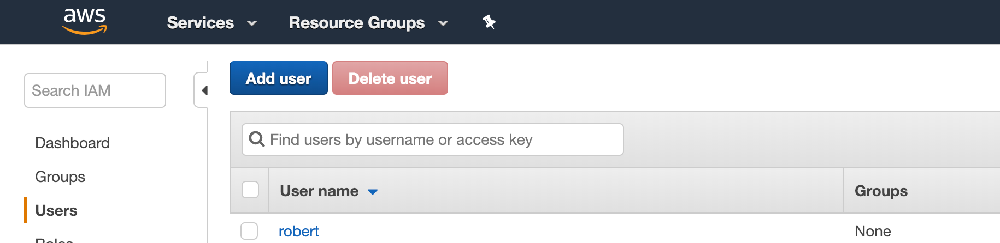
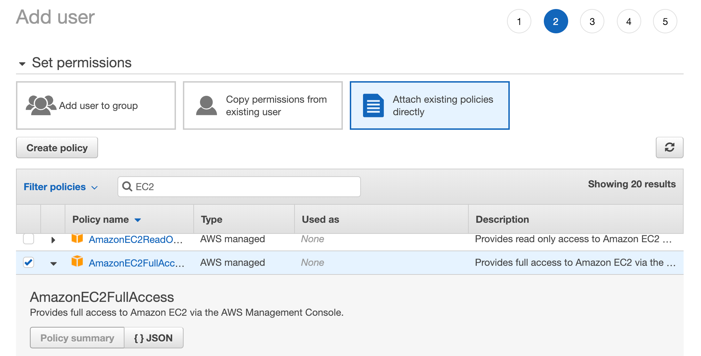

Inertia
✈️ Effortless, self-hosted continuous deployment for small teams and projects


Main Features
- 🚀 Simple to use - set up a deployment from your computer without ever having to manually SSH into your remote
- 🍰 Cloud-agnostic - use any Linux-based remote virtual private server provider you want
- ⚒ Versatile project support - deploy any Dockerfile or docker-compose project
- 🚄 Continuous deployment - Webhook integrations for GitHub, GitLab, and Bitbucket means your project can be automatically updated, rebuilt, and deployed as soon as you
git push- 🛂 In-depth controls - start up, shut down, and monitor your deployment with ease from the command line or using Inertia's REST API
- 🏷 Flexible configuration - branch deployment, environment variables, easy file transfer for configuration files, build settings, and more
- 📦 Built-in provisioning - easily provision and set up VPS instances for your project with supported providers such as Amazon Web Services using a single command
- 👥 Built for teams - provide shared access to an Inertia deployment by adding users
- 🔑 Secure - secured with access tokens and HTTPS across the board, as well as features like 2FA for user logins
Inertia is a simple cross-platform command line application that enables quick and easy setup and management of continuous, automated deployment of a variety of project types on any virtual private server. The project is used, built, and maintained with ❤️ by UBC Launch Pad, UBC's student-run software engineering club.
UBC Launch Pad is a student-run software engineering club at the University of British Columbia that aims to provide students with a community where they can work together to build a all sorts of cool projects, ranging from mobile apps and web services to cryptocurrencies and machine learning applications.
Many of our projects rely on hosting providers for deployment. Unfortunately we frequently change hosting providers based on available funding and sponsorship, meaning our projects often need to be redeployed. On top of that, deployment itself can already be a frustrating task, especially for students with little to no experience setting up applications on remote hosts. Inertia is a project we started to address these problems.
This site primarily documents how to set up and use Inertia - to learn more about the project, check out our GitHub repository! Additional resources you might want to consult include:
Getting Started
MacOS users can install the CLI using Homebrew:
brew install ubclaunchpad/tap/inertia
Node.js users can install the CLI using npm:
npm install -g @ubclaunchpad/inertia
Windows users can install the CLI using Scoop:
scoop bucket add ubclaunchpad https://github.com/ubclaunchpad/scoop-bucket
scoop install inertia
The Inertia command line interface (CLI) can be installed from a few package managers such as npm, Homebrew and Scoop. For other platforms, you can download the appropriate binary from the Releases page.
You can also build Inertia from source, though this requires Golang to be installed.
To verify your installation, try running inertia --help - this should output
some helpful text about Inertia.
Run inertia --version to verify that you have the
latest release.
Setup
This will generate a configuration file inside your repository:
cd /path/to/project
inertia init
To set up Inertia, you must first navigate to your project directory, which
must be a git repository, and run inertia init to set up configuration. If
Inertia cannot detect your project type, it will prompt for more information.
If you haven't yet, Inertia will also instantiate a global configuration file
for you. To create this file separately, run inertia init --global.
Project Configuration
An example
inertia.toml:
name = "my_project"
url = "git@github.com:ubclaunchpad/my_project.git"
[[profile]]
name = "default"
branch = "master"
[profile.build]
type = "dockerfile"
buildfile = "Dockerfile"
To change a setting, you can edit the configuration file directly, or run:
inertia project set ${parameter} ${new_value}
Profiles can be updated or created using the
inertia project profilecommands:
inertia project profile configure new_profile \
--build.type dockerfile \
--build.file Dockerfile.dev
Your Inertia configuration is stored in inertia.toml by default. There are
a few project-wide settings stored here:
| Parameter | Description |
|---|---|
name |
The name of the project you are deploying. |
url |
Your project source, typically your Git repository. |
A profile configures how to run your project, and you can set multiple profiles
to declare different 'modes' of deploying your project (for example, to differentiate
between a staging and dev deployment). A profile contains the following
fields:
| Parameter | Description |
|---|---|
name |
The name of your profile - must be unique. |
branch |
The git branch of your project to continuously deploy. |
build.type |
This should be either dockerfile or docker-compose, depending on which you are using. |
build.buildfile |
Path to your build configuration file, such as Dockerfile or docker-compose.yml, relative to the root of your project. |
Deploying Your Project
When deploying a project, you typically deploy to a "remote".
A "remote" is a remote VPS, such as a Google Cloud Compute or AWS Elastic Cloud Compute (EC2) instance. These are computers in the cloud that will be used to deploy your project, so that you don't have to use your own.
If this is your first time setting up a VPS, jump ahead to the Provisioning a Remote section, which will help you set up a VPS for Inertia.
Using an Existing Remote
This command will prompt you for the path to your PEM file, your username, and the IP address of your remote. These parameters will be used to execute SSH commands that set up Inertia on your VPS.
inertia remote add ${remote_name}
inertia remote ls
To use an existing remote, you'll need its address and a PEM key that can be
used to access it. Inertia will also need a few ports exposed, namely one for
the Inertia daemon (port 4303 by default) and whatever ports you need for your
deployed project.
Configured remotes are stored globally in ~/.inertia/inertia.remotes.
Provisioning a Remote
inertia provision --help
inertia provision ${cloud_provider} ${remote_name}
Inertia has integrations with some cloud providers to allow you to easily provision a new VPS instance and set it up for Inertia. This includes generating key pairs, setting network rules, and initializing the Inertia daemon.
You can use the --help on the provision command to see what options are
available.
Example: Provisioning an EC2 Instance
Elastic Cloud Compute (EC2) is a service provided by Amazon Web Services (AWS) that can be used to deploy Inertia projects. It offers 750 free EC2 hours a month for your first 12 months, which is just enough for 1 EC2 VPS instance. Even after the trial it's pretty affordable, and a good choice to get started with.
The IAM users page: 
To get started, make an account on the AWS website. If you're a student, you'll also be eligible for yearly free credits, so make sure you sign up for that as well.
Next, you'll want to head over to the IAM page of the AWS Management Console. IAM stands for "Identity and Access Management", and this is where you'll configure programmatic access to your AWS account. Under the "Users" tab, click "Add User".
Configuring IAM permissions: 
This will take you through a brief walkthrough to configure your new IAM user:
- Page 1 - make sure you enable Programmatic Access to tell AWS to generate access keys for your new user - Inertia will need this.
- Page 2 - make sure to choose a permission set that allows the user to manipulate EC2 resources, such as AmazonEC2FullAccess (this will be under the 3rd tab titled "Attach existing policies directly").
- Page 3 - don't worry about setting tags, as these are typically used for organizations with large numbers of users.
- Page 4 - confirm that you've configured the user correctly
- Page 5 - you should be shown a Access Key ID and a Secret access key. Copy these somewhere safe!
# set credentials in environment
export AWS_ACCESS_KEY=${access_key_id}
export AWS_SECRET_KEY=${secret_access_key}
inertia provision ec2 my_remote \
--from-env \
--ports 8080
This command says: "provision an ec2 instance called 'my_remote' using credentials in my environment and expose port 8080 for my project".
Now that you have your user and access keys all set up, you can provision your
remote instance! Just set your keys in your
shell environment
and use the --from-env flag as in the example to provision a remote using
those credentials.
Alternatively, you can save your credentials in your
AWS credentials file.
To use these with Inertia, just call the provision ec2 command with the
--from-profile flag.
Inertia will just prompt you for the keys if you don't provide them using one of the methods above.
The provisioning command will ask you to choose a region and an image to use. The region should probably be whatever is closest to you, and then you should just choose one of the images that Inertia lists as options.
Inertia will then create an EC2 instance, generate a key pair to give you SSH access to the remote, set up network rules, install Inertia's prerequisites on your remote, and spin up the Inertia daemon!
Remote Configuration
List and show your configured remotes:
inertia remote ls
inertia remote show ${remote_name}
An example
~/.inertia/inertia.remotes:
# ... other stuff
[[remote]]
version = "latest"
name = "staging"
ip = "123.456.789.123"
[remote.ssh]
user = "root"
identityfile = "~/.ssh/id_rsa"
ssh-port = "22"
[remote.daemon]
port = "4303"
token = "weRO5gfUoXFQuBnLuJewGvBehf7A4yVUHxKSF0f3FFc"
webhook-secret = "ubclaunchpad"
verify-ssl = false
[remote.profiles]
"my_project" = "default"
[[remote]]
# ... another remote
To change a setting, you can edit the configuration file directly, or run:
inertia remote set ${remote_name} ${parameter} ${new_value}
For example, the following will change the SSH user for accessing
my_remotetomeand print out the new settings:
inertia remote set my_remote ssh.user me
inertia remote show my_remote
Once you've added a remote, remote-specific settings are available in
~/.inertia/inertia.remotes.
| Parameter | Description |
|---|---|
version |
This should match the version of your Inertia CLI, which you can see by running inertia --version. It is used to determine which version of the Inertia daemon to use. |
name |
The name of your remote instance - must be unique. |
ip |
This is the address of your remote instance. It's how other users will access your deployed project as well! |
ssh.user |
The user to use to execute commands as on your remote instance. |
ssh.identityfile |
The key to use when executing SSH commands on your remote instance. |
ssh.ssh-port |
The SSH port on your remote instance - you usually don't need to change this. |
daemon.port |
The port that the Inertia daemon is using - you can usually leave this as is. |
daemon.token |
This is the token used to authenticate against your remote, and will be populated when you initialize the Inertia daemon later. You can also log in as a user to get a token. |
daemon.webhook-secret |
This is used to verify that incoming webhooks are authenticate - you'll need this later! |
daemon.verify-ssl |
Toggle whether or not to verify SSL communications for the daemon's API - false by default. |
Profiles
inertia project profile apply ${profile_name} ${remote_name}
inertia ${remote_name} up
The profiles section under the remote configuration defines
default profiles to use when deploying a project. If none is configured, Inertia
looks for a profile named default.
See the Project Configuration section for how to set up profiles for your project.
Initializing the Inertia Daemon
inertia ${remote_name} init
# ... lots of output
Initializing the Inertia daemon means installing Docker, setting up some prerequisites, downloading the Inertia daemon image, and getting it up and running. Luckily, this is all done by a single, handy command so you don't have to worry about it!
The Inertia daemon is a small agent that runs on your VPS instance and handles all your deployment-related needs, such as responding to commands and listening for updates to your repository. You can read more about this in the Deployment Management section.
Configuring Your Repository
The
inertia ${remote_name} initorprovisioncommand's output should include something like the following:
GitHub Deploy Key (add here https://www.github.com/<your_repo>/settings/keys/new):
ssh-rsa <...> # this is important!
GitHub WebHook URL (add here https://www.github.com/<your_repo>/settings/hooks/new):
http://myhost.com:4303/webhook # this is important!
Github WebHook Secret: inertia # this is important!
The inertia ${remote_name} init or provision command outputs several key
pieces of information to get your repository set up for continuous deployment:
- A deploy key: you need to allow this key read access to your repository. On GitHub, this is under your project's "Settings -> Deploy Keys" tab. This will allow the Inertia daemon to clone your project.
- A webhook URL and webhook secret: you'll need to register the Inertia daemon for webhook updates to let it automatically deploy your latest changes. On GitHub, this is under your project's "Settings -> Webhooks" tab.
inertia ${remote_name} up
Deployment Management
To bring your project online and check its status:
inertia ${remote_name} up
inertia ${remote_name} status
To shut down your project:
inertia ${remote_name} down
The main commands used to control your deployed project are up, status, and
down. These commands are associated with the state of your project, not with
that of the Inertia daemon - inertia ${remote_name} down, for example, will
not shut down the Inertia daemon.
Commands like up will provide live output to your terminal. It's pretty normal
for up to take a while, depending on the performance of your VPS, as it needs
some time to build your project.
Monitoring
inertia ${remote_name} logs
To view the logs of a specific process, get the list of active containers, then query for the logs of the container you are interested in:
inertia ${remote_name} status
inertia ${remote_name} logs ${container_name}
TODO: details
Secrets Management
Environment variables are a good way to store secrets:
inertia ${remote_name} env set ${key} ${value}
If you use configuration files such as a
.envfile, you can "send" it to your remote - this file will then become accessible by your project:
inertia ${remote_name} send ${file_name}
TODO: details
Teams
Configuring Users
The following command will prompt for a password, and add the given user as an administrator:
inertia ${remote_name} user add ${username} --admin
To list existing users:
inertia ${remote_name} user ls
Access can be revoked for a user by removing them:
inertia ${remote_name} user rm ${username}
TODO
Logging In
If you want to log in to a remote you have already configured as a specific user, you can run:
inertia ${remote_name} login ${username}
TODO
Upgrading
Install the latest release - for example, on MacOS:
brew upgrade ubclaunchpad/tap/inertia
inertia --version # verify installation
To update configuration and daemon to match CLI version:
inertia ${remote_name} upgrade --all
The version of Inertia you are using can be seen in Inertia's inertia.toml
configuration file, or by running inertia --version. The version in
inertia.toml is used to determine what version of the Inertia daemon to use
when you run inertia ${remote_name} init.
You can manually change the daemon version used by editing the Inertia
configuration file. If you are building from source, you can also check out the
desired version and run make inertia-tagged or make RELEASE=$STREAM.
Inertia daemon releases are tagged as follows:
v0.x.xdenotes official, tagged releases - these are recommended.latestdenotes the newest builds onmaster.canarydenotes experimental builds used for testing and development - do not use this.
You can see the list of available tags on Docker Hub.
Advanced Usage
This section details various advanced usage tips. If you can't find what you're
looking for here, try using the --help flag on relevant commands - Inertia
will display help text and all the different options available to you.
A complete command reference for the Inertia CLI is also available here. To interact with the daemon API directly, refer to the API reference.
Troubleshooting
To view more of the Inertia daemon's logs (the number of entries retrieved is capped by default), run:
inertia ${remote_name} logs --entries 100000
inertia ${remote_name} logs ${container} --entries 100000
Inertia is a large and rather complex project, and as such you might encounter bugs, either because of Inertia or due to some kind of misconfiguration.
The Inertia daemon outputs a lot of verbose logs that might help you out. You
can also make use of the inertia ${remote} status command to output details
about the state of your deployment. Also pay attention to the output of the
Inertia CLI when things go awry - it might hint at what happened, and it'll be
useful context if you decide to open a ticket.
To start an SSH session with your remote, you can use the shortcut:
inertia ${remote_name} ssh
If you are more experienced, you can SSH into your remote to investigate. This lets you access more advanced Docker commands and whatever else you might need to work out what is happening.
2-Factor Authentication
inertia ${remote_name} user totp enable ${username}
inertia ${remote_name} user totp disable ${username}
2-factor authentication configuration in Inertia is available under the
inertia ${remote_name} user totp commands.
TOTP stands for "time-based one-time password". Enabling TOTP on an account means that whenever a user logs in using that account, they must also verify their identity using a separate authenticator app, which provides a secondary factor of authentication - hence why it is called "2-factor authentication".
There are a wide range of authenticator apps out there, for example:
To log in as a totp-enabled user, you'll have to provide your TOTP or backup code as a flag:
inertia ${remote_name} user login ${username} --totp ${code}
When you enable TOTP on an account, Inertia will output a QR code that you can scan using your authenticator app, as well as a list of backup codes you should keep somewhere safe. When you log in using a TOTP-enabled account, you'll need to provide the TOTP generated by your authenticator app to log in, or one of the backup codes.
Resource Management
To clear out unused Docker images and containers:
inertia ${remote_name} prune
You can also interact with Docker directly over SSH:
inertia ${remote_name} ssh
root@remote:~$ docker container ls -a
Inertia does its best to manage resources on its own, but sometimes spare containers and images start gathering and you might find your remote starting to run out of storage (especially if it is a free/budget instance with low storage).
Inertia offers a few ways of managing resources, either through commands like
prune or directly over SSH.
Persistent Data
If your project depends on data on disk that must be persisted across builds, you can
take advantage of a /persist directory that is mounted into your project when it is
deployed. Data in this directory is not ephemeral and persists across deployments.
Generating API Keys
inertia ${remote_name} token
If you want to develop integrations with Inertia, you'll probably want a non-expiring API token, which you can generate using Inertia if you have SSH access to your remote. Be careful not to lose these tokens.
curl -H "Authorization: Bearer ${token}" \
https://${remote_ip}:${daemon_port}/status
To use these tokens, you can place them in your inertia.toml under token, or
use them in requests to the Inertia API by placing them as a Bearer token in
your request header under Authorization.
Custom SSL Certificate
By default, the Inertia daemon generates a self-signed SSL certificate for its API. This means that Inertia, by default, doesn't verify SSL communications, and you'll have to do things like disable SSL verification in your repository for webhooks.
inertia ${remote_name} --verify-ssl status
If you provide your own SSL certificate, you can enable SSL verification in
Inertia using the --verify-ssl flag, and enable SSL verification in your
repository's webhook deliveries as well.
Just place your SSL certificate and key on your remote in ~/.inertia/ssl as
daemon.cert and daemon.key respectively, and the Inertia daemon will use
them automatically.
Intermediary Containers
name = "my_project"
# ...
[[profile]]
# ...
[profile.build]
# ...
intermediary_containers = [ "nginx" ]
You can declare "intermediary" containers used during builds that don't persist for the lifetime of your project - for example, containers that run tasks. This tells the Inertia daemon not to worry if it detects that containers with the given names die.
Miscellaneous
Learn More
Some quick links to help you get started:
Check out our GitHub repository and Wiki!

Swag
[](https://github.com/ubclaunchpad/inertia)
Add a cool Inertia badge to your README if you use Inertia!


A live status badge is also available - just replace INERTIA_ADDRESS in the example with the
address of your Inertia daemon and you'll be able to check on the status of your project using
the badge!
Contributing
Any contribution (pull requests, feedback, bug reports, ideas, etc.) is welcome!
You can report issues with documentation, bugs, or anything via our issue tracker.
For development, please see our contribution guide for contribution guidelines as well as a detailed guide to help you get started with Inertia's codebase.